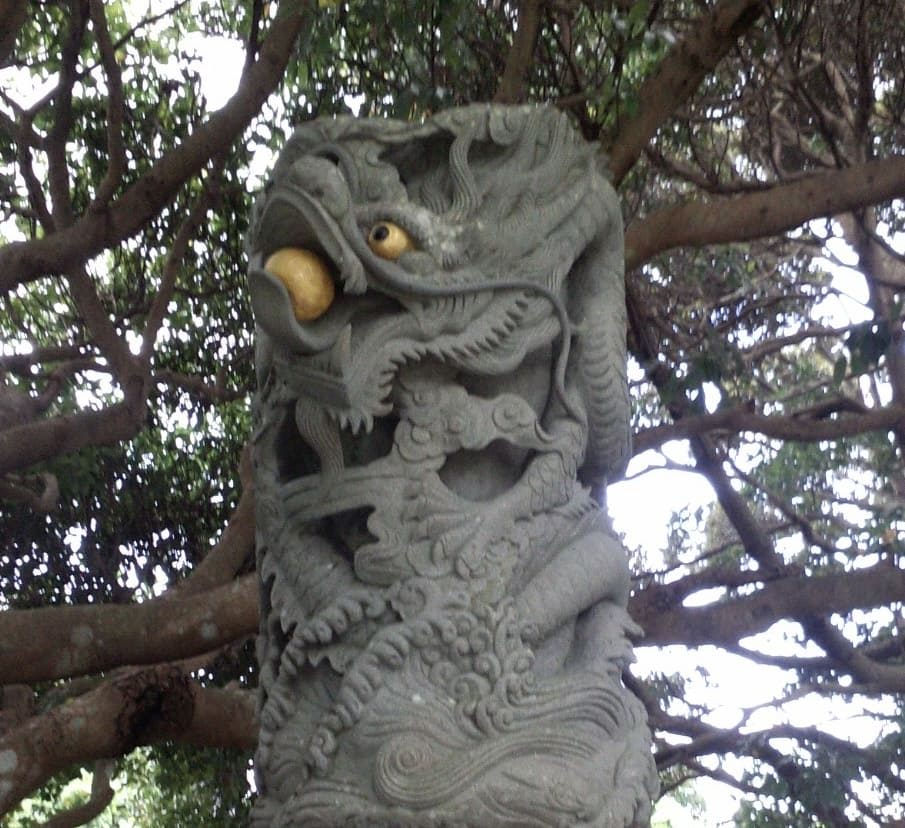
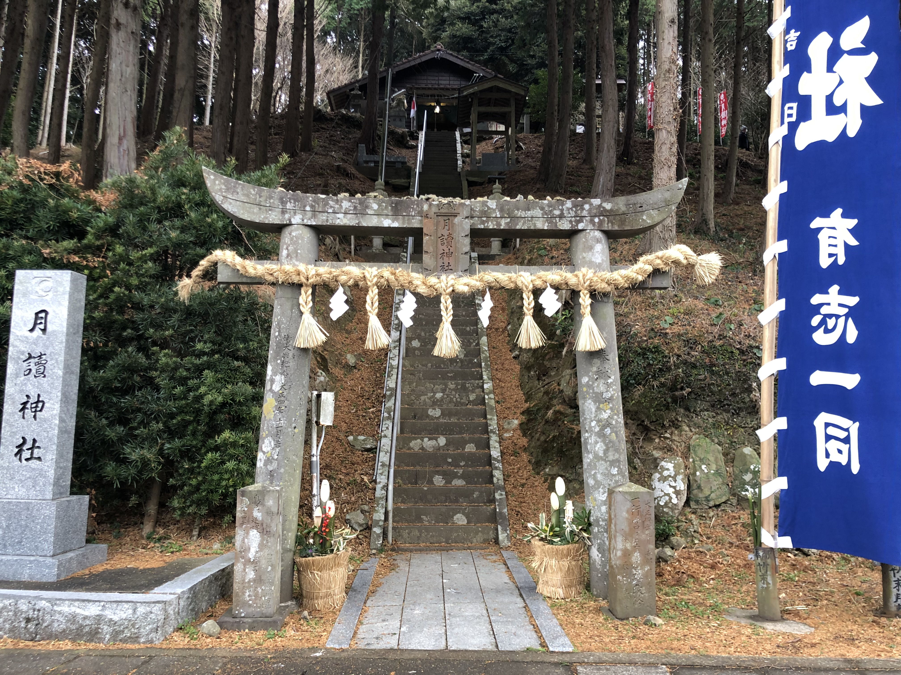
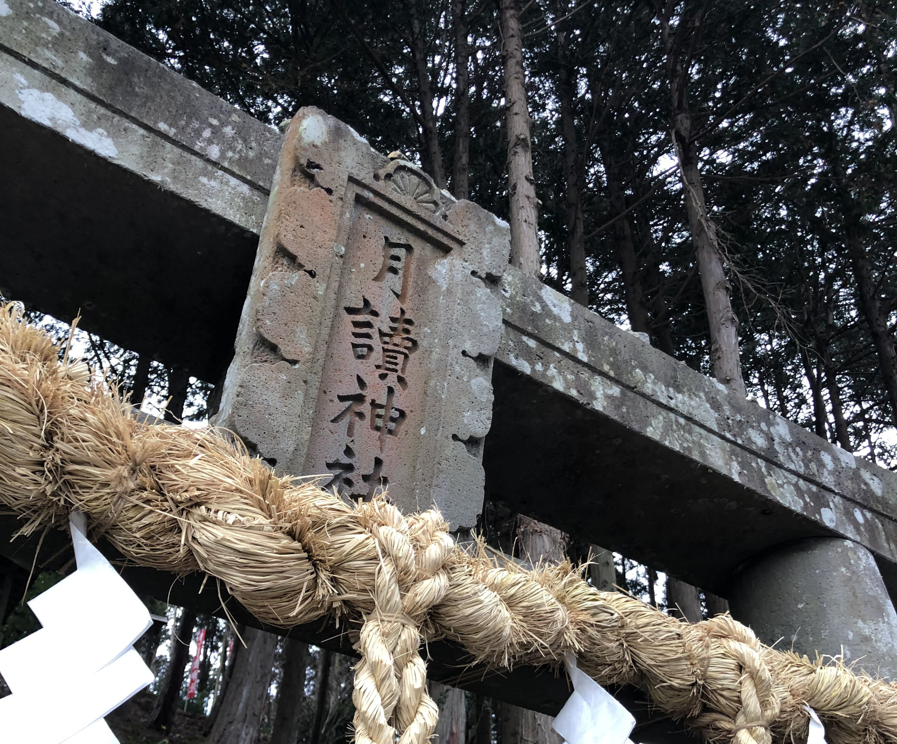

神社

壱岐には別の一面もあります。日本最古の歴史書『古事記』には「天比登都柱（アメノヒトツバシラ）」という名で登場し、天上と地上をつなぐ一本の柱とされ古くから神々とゆかりのある地とされてきました。
壱岐には神社庁に登録されているものだけで１５０以上もの神社があるといわれています。日本一の神社密度を誇る壱岐はまさに神々が宿る島。
また島には”神道発祥の地”と言われる神社もあります。この夏はぜひ神話を巡る旅へこられてはいかがでしょうか。
小島神社
芦辺港から車で約７分。海の上に浮かぶ小島にある神社。干潮時になると道が現れ数時間だけ渡り参拝することができます。
島全体が神域とされ小枝一つ持ち帰ることが許されない神聖な場所。神秘的な写真が撮れると人気で多くの観光客が訪れます。（御朱印は事前予約が必要）
| 住所 | 長崎県壱岐市芦辺町諸吉ニ亦触1969番地 |
|---|---|
| 電話番号 | 03-5759-3225（御朱印予約） |
| アクセス | 芦辺港から車で7分 |
| 駐車場 | 有り |
| 備考 | 御朱印は事前予約が必要 |
龍光大神
- 
壱岐で最も高い山岳の辻（たけのつじ）の頂上に鎮座する龍光大神（りゅうこうおおかみ）。
毎年１０月に日本中の神様が出雲大社に集まる(神無月)と言われていますが、出雲大社へ向かう前に一度すべての龍が集うのがここ龍光大神とされています。
日本では龍神の爪は３本が一般的ですがここ龍光大神の爪は７本ととても珍しいものです。また山の上にある高台からは島全体が見渡せる絶景が広がっています。
| 住所 | 長崎県壱岐市郷ノ浦町片原触398-1 |
|---|---|
| アクセス | 郷ノ浦港から車で10分 |
| 駐車場 | 有り |
| 備考 | トイレ有り |
月讀神社
- 
- 
芦辺港から車で約10分、道路の脇にひっそりと佇む月讀神社（つきよみじんじゃ）。
辺りには巨木が立ち並び鳥居をくぐると異質な雰囲気が漂っています。御祭神は月讀命（つくよみのみこと）。日本の最高神とされる天照大御神（あまてらすおおみかみ）の次に生まれた神で、天照が昼を司る太陽の神とされ対照的に月讀は夜を司る月の神とされています。
４８７年に壱岐の月讀神社から分霊した京都の月読神社を中心に日本全国に神道が広まった為その元宮であるここが”神道発祥の地”と呼ばれています。
| 住所 | 長崎県壱岐市芦辺町国分東触464番地 |
|---|---|
| 電話番号 | 03-5759-3225（御朱印予約） |
| アクセス | 芦辺港から車で10分 |
| 駐車場 | 有り |